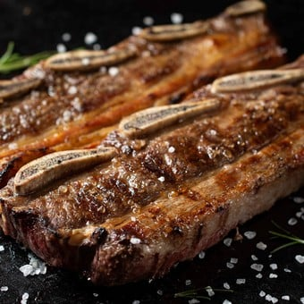

Asadito

Esta receta es para cocinar el tipico corte argentino que esta muy piola
Ingredientes
Asado
Carbon
Pasos
Prender el carbon
Fuego medio(mano aguanta 7seg)
Tirar el asado del lado de la grasa
Dar vuelta y dejar cocinar y disfrutar el manjar